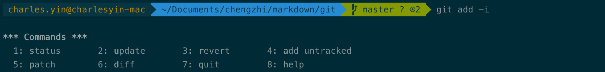
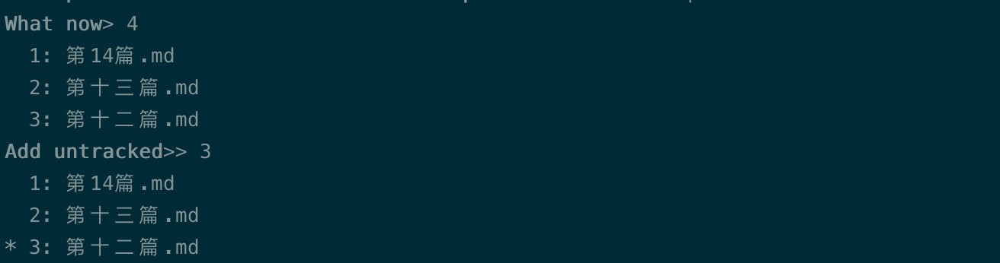
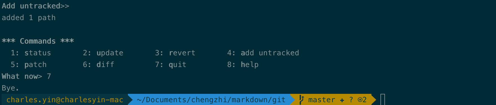
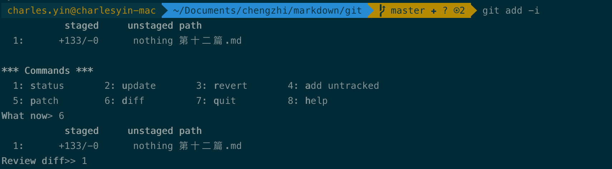
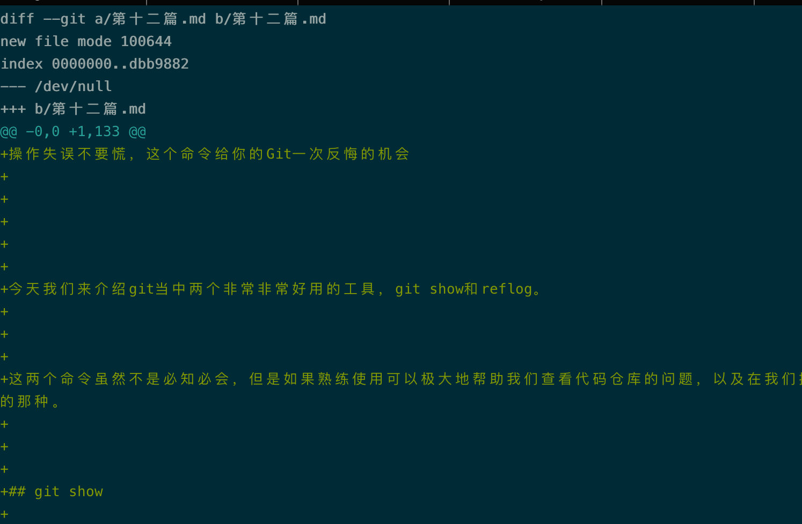
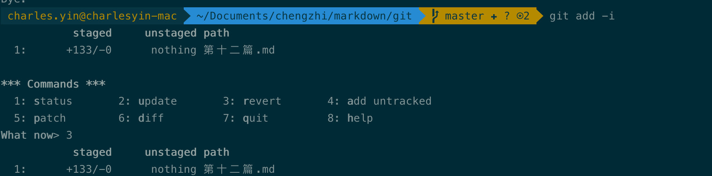
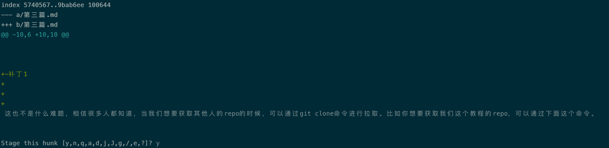
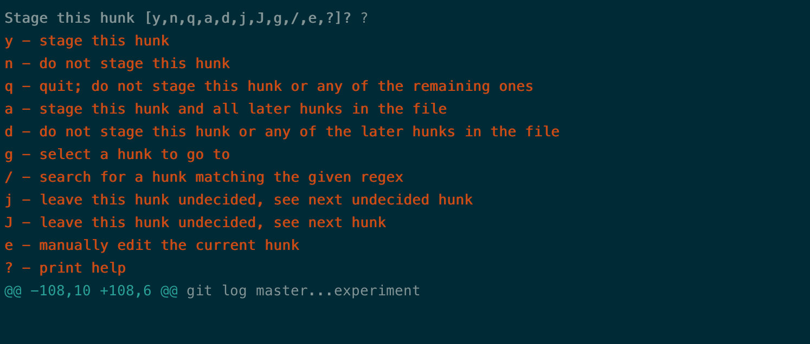
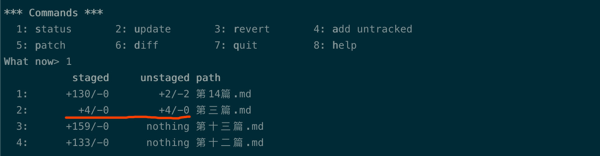

# 学会了这一招，距离Git大神不远了！
大家好，今天我们来介绍git当中一项非常重要的功能——交互式工具
有的时候如果我们要处理的文件很多，使用git add .等操作会非常有隐患，因为很有可能我们一不小心就疏忽了一些内容。如果我们使用一个文件名一个文件名地填写呢，又非常地复杂，体验并不好。所以呢git当中还提供了第三种方法，也就是今天要介绍的内容——交互式工具。
# 交互式暂存
交互式暂存的命令非常简单，其实就是一个参数，-i。这里的i表示的是interactive，也就是交互的意思。当我们执行这个命令之后，git会进入一个交互式的终端。这样我们就可以通过一些简短地命令和git进行交互。
首先，我们输入git add -i 进入交互式的命令。
 可以看到这里有8个选项，这里的选项大家应该都能看懂，其中集成了很多种功能，我们接下来一个一个讲解。
首先是将新文件添加到暂存区，我们选择4，表示添加未被git管理的文件，接着又会询问我们要添加的文件。这里我们就不用再输入文件名了，直接选择序号即可。我们先添加一个，选择3。之后我们会看到3对应的文件名前面被打上了*，表示这个文件将会被添加。
 接着我们再敲一次回车，可以回到上级菜单，然后我们选择7退出，可以看到git的状态已经改变了。

# 查看改动
我们将改动添加到暂存区之后，我们还可以使用git add -i 来查看某一个文件的具体改动。操作方法也非常简单，我们同样通过git add -i 进入交互模式，然后选择6进入diff模式。
 接着我们输入1，表示我们要查看的改动，git会打开一个vim窗口，为我们展示这个文件当中被我们添加的改动。
 它的效果等价于我们执行git diff --cached。
# 取消暂存
如果我们add了之后，发现add错了，想要反悔，那么也是容易的，我们可以使用revert功能撤销我们这次的add。
操作也很简单，我们还是输入git add -i 进入交互式的命令。会发现我们刚进来的时候就提示我们当前暂存区的状态。这里我们选择3进行撤销，git会展示出我们暂存区的所有文件，这里我们只提交了一个文件，所以也只能看到一个。
image-20201022084056498 这里我们选择1号文件，然后退出，会发现我们回到了git提交之前的状态。

# 暂存补丁
最后介绍一下补丁的功能，这个功能我用的不多，不过用好了可以在一些情况下大大简化我们的操作。
当我们执行暂存操作的时候，我们针对的主体都是某一个文件。但是会有这样一种情况，某一个文件当中的改动很多，我们只想要把其中的一部分添加进git，另外一部分先保留在本地。这种情况也很常见，比如同时开发两个功能，一个开发好了，另外一个还在测试。为了赶工期，决定先把其中的一个功能先上线，那么还在测试的功能显然不能被提交，否则可能会带来隐患。
针对这种情况，我们就需要使用补丁。为了演示，我们在之前的文件当中加了两行废话，然后执行git add -i，选择5.
 当我们选择了我们想要进行补丁的文件并且按回车之后，git会把我们的改动一个部分一个部分地询问我们。
当我们选择了我们想要进行补丁的文件并且按回车之后，git会把我们的改动一个部分一个部分地询问我们。
 这里的命令可能看不明白，没关系，我们输入？可以获取完整的含义。
 说了这么多，其实关键的只有两个，y表示需要把它加入存储，n表示不加入。这样当我们操作完了之后，我们再来查看状态，会发现刚才我们操作过的文件当中，一部分被添加了进来，另外一部分没有。

# 总结
怎么样，交互式命令是不是非常好用呢？
它的最大的一个优点就是将多个命令集合在了一起，可以一个命令实现多个功能。并且每个功能都以交互的形式展现，可以方便我们的操作，降低我们搞错的几率。这也是很多git大神非常喜欢的功能，希望大家都能学会。
今天的文章就到这里，衷心祝愿大家每天都有所收获。如果还喜欢今天的内容的话，请来一个三连支持吧~（点赞、关注、转发）
原文链接，求个关注
.markdown-body pre,.markdown-body pre>code.hljs{color:#333;background:#f8f8f8}.hljs-comment,.hljs-quote{color:#998;font-style:italic}.hljs-keyword,.hljs-selector-tag,.hljs-subst{color:#333;font-weight:700}.hljs-literal,.hljs-number,.hljs-tag .hljs-attr,.hljs-template-variable,.hljs-variable{color:teal}.hljs-doctag,.hljs-string{color:#d14}.hljs-section,.hljs-selector-id,.hljs-title{color:#900;font-weight:700}.hljs-subst{font-weight:400}.hljs-class .hljs-title,.hljs-type{color:#458;font-weight:700}.hljs-attribute,.hljs-name,.hljs-tag{color:navy;font-weight:400}.hljs-link,.hljs-regexp{color:#009926}.hljs-bullet,.hljs-symbol{color:#990073}.hljs-built_in,.hljs-builtin-name{color:#0086b3}.hljs-meta{color:#999;font-weight:700}.hljs-deletion{background:#fdd}.hljs-addition{background:#dfd}.hljs-emphasis{font-style:italic}.hljs-strong{font-weight:700} 文章来源：https://juejin.cn/post/6900729541925273614